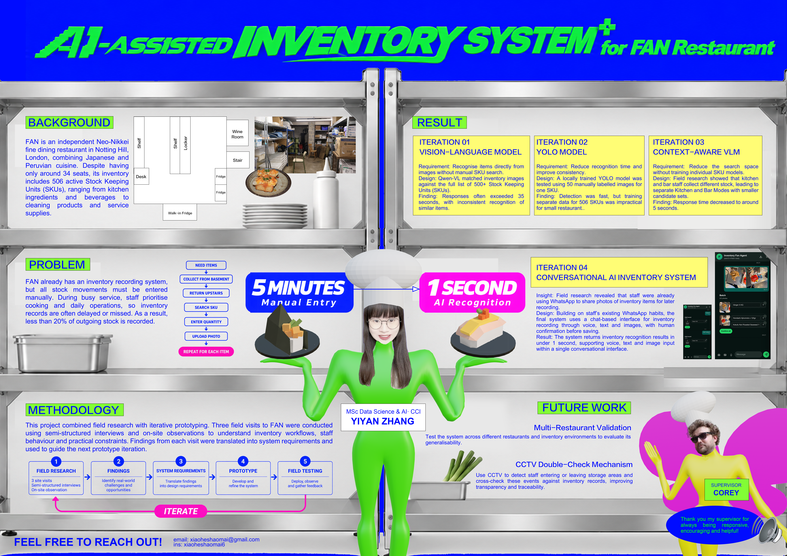

直接识别全量库存
用视觉语言模型将照片与 500 多个 SKU 匹配，省去手动搜索。
响应经常超过 35 秒，相似物品的识别也不稳定。
FAN RESTAURANT · FIELD RESEARCH & AI PRODUCT
把繁琐的库存录入，变成一次对话。
01 / THE REAL PROBLEM
FAN 是位于伦敦 Notting Hill 的独立 Neo-Nikkei 餐厅，融合日本与秘鲁料理。只有约 34 个座位，却需要管理 506 个活跃 SKU，覆盖食材、饮料、清洁用品和服务耗材。
餐厅已有库存系统，但每次出入库都要手动填写。营业高峰期，员工优先做菜和服务，库存记录常被延后或遗漏。
拿货只是开始：回到楼上、搜索 SKU、填写数量、上传照片，每件物品都要再来一遍。
02 / FIELD RESEARCH
三次实地走访，结合半结构化访谈与现场观察，把员工的实际工作方式转化为下一轮原型需求。
访谈员工，观察库存工作流程。
识别真实阻碍与改进机会。
把调研发现转化为设计要求。
开发并迭代系统。
部署、观察、收集反馈，再回到调研。
03 / FOUR ITERATIONS
用视觉语言模型将照片与 500 多个 SKU 匹配，省去手动搜索。
响应经常超过 35 秒，相似物品的识别也不稳定。
用一个 SKU 的 50 张人工标注图片训练本地 YOLO 模型，测试检测速度。
检测快，但为 506 个 SKU 分别收集、标注和训练，对小餐厅不现实。
调研发现厨房和吧台员工取用的库存不同，于是拆分 Kitchen 与 Bar 的候选集合。
无需逐个训练 SKU，响应时间降到约 5 秒。
ITERATION 04 · CONVERSATIONAL AI
员工已经会用 WhatsApp 拍照分享库存物品，方便稍后记录。最终方案以这个习惯为起点，设计支持语音、文字和图片的对话式库存界面。
返回库存识别结果
保留人工确认，让识别结果经过核对后再写入库存。
04 / PROJECT POSTER

05 / NEXT STEPS
在不同餐厅与库存环境中测试系统，评估方案的适用范围。
计划检测员工进出储藏区的事件，与库存记录交叉核对，提高透明度与可追溯性。